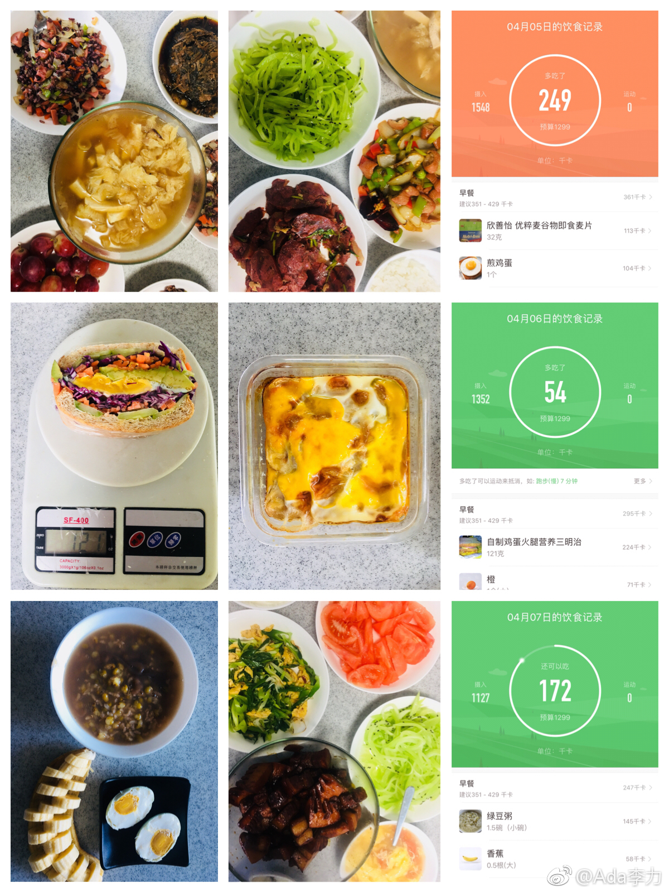

清明假期在家做了三日减脂餐，同时记录下入口食物的所有热量。有一些感想。
食物热量跟记账类似，认真记录下来的热量，总是远远高于自己的估计。
仅看热量是不够的，一个蛋糕和一餐搭配全面的晚餐，热量一样，满足感是不一样。对我来说，吃完蛋糕，可能还是需要吃一顿饭菜，才觉得满足；而吃完搭配全面的一餐，我对蛋糕也会没兴趣了。
把做饭过程当作化学实验，尝试学做新菜，能极大调动自己做饭积极性。
周末及假期在家时，很容易吃超量。因为两个原因，一，无所事事，要靠吃打发时间；二，太方便取食物和零食。 解决办法：周末不要宅家里，家里不要屯太多零食
食物热量跟记账类似，认真记录下来的热量，总是远远高于自己的估计。
仅看热量是不够的，一个蛋糕和一餐搭配全面的晚餐，热量一样，满足感是不一样。对我来说，吃完蛋糕，可能还是需要吃一顿饭菜，才觉得满足；而吃完搭配全面的一餐，我对蛋糕也会没兴趣了。
把做饭过程当作化学实验，尝试学做新菜，能极大调动自己做饭积极性。
周末及假期在家时，很容易吃超量。因为两个原因，一，无所事事，要靠吃打发时间；二，太方便取食物和零食。 解决办法：周末不要宅家里，家里不要屯太多零食
- 